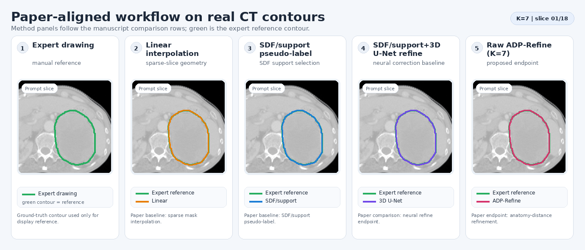
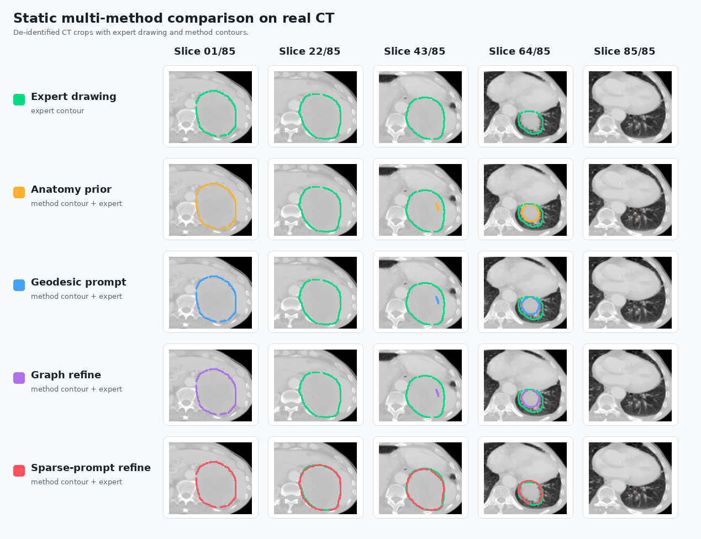

Method Structure
The repository separates geometric preprocessing from optional supervised refinement. Inputs are passed as local paths, so the same code can be used without exposing private data in the public repo.
Local inputs
Load CT, target labels, OAR masks, or prepared sparse prompts from private local storage.
SDF propagation
Convert prompt slices into signed distance fields and propagate them across the volume.
Core-envelope
Aggregate support candidates into a conservative core and a broader candidate envelope.
Preprocess rule
Select a deployable pseudo-label through train-calibrated support-intersection logic.
Refine network
Optionally learn local pseudo-to-true corrections under envelope and anatomy constraints.

Dynamic Real CT Workflow Display
The animation shows the workflow on rendered 2D CT crops: CT context, expert drawing, candidate method contours, and final sparse-prompt refinement. It contains no case ID, scan date, private path, or volumetric medical file.
Real CT And Contour Displays
These public displays are derived from one real segmentation output and rendered as de-identified 2D CT crops with contour overlays. No DICOM/NIfTI volume, case identifier, acquisition date, private path, or clinical metadata is present in the repository.

Dynamic Single-Case Slice Display
The animated target-range series shows real CT crops with expert drawing and sparse-prompt refinement contours overlaid.
Open gallery
Static Multi-Method Comparison
The static panel compares expert drawing, preprocessing variants, graph refinement, and final sparse-prompt refinement on the same CT slice positions.
Dynamic Workflow Display
The workflow animation follows CT context, expert drawing, candidate contours, and final refinement across the anonymized target range.
Environment And Usage
Install the Python dependencies, then provide local paths explicitly. The public repository does not download or include datasets.
Install
conda create -n ctv-sparse-refine python=3.10 -y
conda activate ctv-sparse-refine
pip install -r requirements.txtRun Preprocessing
python scripts/run_sparse_prompt_core_envelope_workflow.py \
--ct_dir /path/to/local_dataset/imagesTs \
--gt_dir /path/to/local_dataset/labelsTs \
--oar_dir /path/to/local_oar_dataset/labelsTs \
--out_root results/demo_sparse_prompt_workflowTrain Refinement
python scripts/train_ctv_pseudo_refine_net.py \
--source /path/to/local_dataset \
--oar_source /path/to/local_oar_dataset \
--feature_source generate \
--out_dir results/demo_refine_trainPreview Site
python -m http.server 8000 --directory sitePrivacy Boundary
Public release is limited to code, generic documentation, and de-identified rendered 2D CT/contour assets. Original private data stays outside Git.
Open checklist- No DICOM, NIfTI, RTSTRUCT, label volumes, or full raw scan exports.
- Only de-identified rendered 2D CT crops and contour overlays are included.
- No local case IDs, acquisition dates, private study counts, or institution names.
- No checkpoints, generated predictions, logs, or experiment caches.
- No manuscript text or tables that disclose private dataset details.
- No hard-coded private server paths in public command examples.